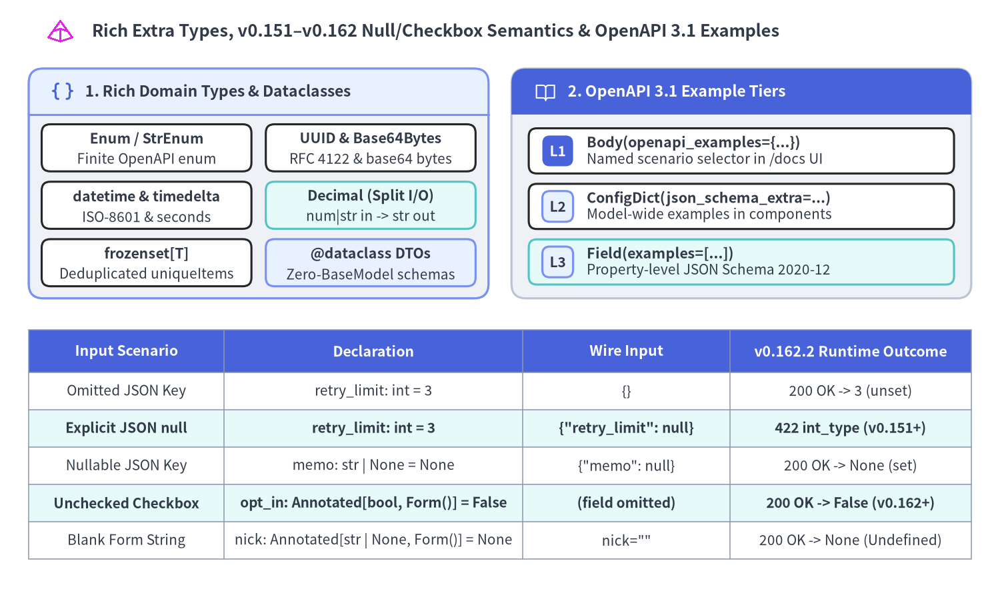

Parameter Models, Extra Types & Schema Examples
FastAPI v0.157.0–v0.162.2 elevates Pydantic parameter models (Query(), Header(), Cookie(), Form()) into composable, optional, and union-capable extractors while enforcing strict JSON null vs. omitted semantics, HTML checkbox Form defaults, rich standard-library/Pydantic data types, and multi-tier OpenAPI 3.1 examples.

Grouping related HTTP inputs into reusable Pydantic BaseModel classes keeps endpoint signatures concise while preserving full @model_validator invariants across query strings, headers, cookies, and form bodies.
1. Composing Parameter Models (Query, Header, Cookie, Form)
Across FastAPI v0.157.0–v0.162.2, fastapi/dependencies/utils.py generalizes parameter models from isolated single-model annotations into composable building blocks across endpoints and Depends() sub-graphs:
- Multi-Model Composition & OpenAPI Flattening:
- For
Query(),Header(), andCookie(),_get_param_model()unwraps bothModelandModel | None, expanding each model's cached fields viaget_flat_params()into flat OpenAPI parameter entries while validating each model independently inside_request_param_model_to_args(). - For
Form(),_get_form_models()composes multiple form models (across both route parameters andDepends()) into an OpenAPIallOfrequest body schema and extracts each model's fields independently from the rawFormDatainside_extract_form_model().
- For
- Per-Model
Header(convert_underscores=...)Isolation:_request_param_model_to_args()resolvesconvert_underscoresperHeader()parameter without mutatingModel.model_fieldsin place—allowing the sameBaseModelto be reused acrossHeader(),Header(convert_underscores=False), andQuery(). Whenloc_by_alias=True(default), validation errors automatically report wire-format hyphenated names (such as["header", "x-retry-attempt"]).
- Optional (
Model | None = None) & Discriminated UnionForm()Models:- Declaring
Annotated[RangeModel | None, Query()] = None(orHeader(),Cookie(),Form()) checks whether any alias declared onRangeModelappears in the incoming request (own_names.intersection(received_params)/_is_form_model_supplied()). When completely absent, FastAPI passesUndefinedso the argument resolves toNone; when partially supplied (for example?min_cents=500withoutmax_cents), Pydantic validates the model and raises422for the missing sibling field. (Omitting= Nonekeeps the parameter required even if its type union includesNone.) - Declaring
Annotated[WebhookForm | EmailForm | None, Form(discriminator="channel")] = Nonetriggers_add_form_union_validators(), wrapping each union branch in aBeforeValidator(_normalize_form_model)so repeated form entries (list[str]vs. scalarstr) are normalized per branch.
- Declaring
- The
v0.160.0Siblingextra="forbid"Rule:- Because query parameters, headers, cookies, and flat HTML forms each occupy a single shared namespace on the wire,
_request_param_model_to_args()and_extract_form_items()forward all unclaimed keys in that location to every parameter model so each model'smodel_config["extra"]policy can execute.
- Because query parameters, headers, cookies, and flat HTML forms each occupy a single shared namespace on the wire,
| Composition Pattern | Recommended extra Policy |
Runtime Behavior in FastAPI v0.160.0–v0.162.2 |
|---|---|---|
Single Query / Cookie / Form model (no sibling params in same location) |
extra="forbid" or "ignore" |
Rejects unknown client typos (422 extra_forbidden) cleanly |
Multiple sibling models or model + scalar param / Depends() in same location |
extra="ignore" (Pydantic default) |
Each model validates its own fields and ignores sibling keys; setting extra="forbid" causes Model A to reject Model B's keys with 422! |
Header() parameter model |
extra="ignore" (mandatory in practice) |
Clients always send standard HTTP headers (host, user-agent, accept), which trigger 422 extra_forbidden under extra="forbid" |
[!WARNING] If you need strict unknown-key rejection (
extra="forbid") across modularQuery()orForm()slices, combine them via Pydantic multiple inheritance (class CombinedQuery(PaginationParams, SortParams): model_config = ConfigDict(extra="forbid")) rather than declaring two separateextra="forbid"parameters on the same route. Also define parameter models at module scope so stringified annotations (from __future__ import annotations) resolveBaseModelsubclasses during registration.
Composing Multi-Model Queries, Optional Headers/Cookies & Union Forms
The following verified application composes a shared Depends() pagination model with optional Query(), Header(), and Cookie() models, contrasts them with a single-owner extra="forbid" cursor endpoint, and parses an optional discriminated union Form():
from typing import Annotated, Any, Literal
from fastapi import Cookie, Depends, FastAPI, Form, Header, Query
from pydantic import BaseModel, ConfigDict, Field, model_validator
app = FastAPI(title="Parameter Model Composition API", version="1.0.0")
class PaginationParams(BaseModel):
# Keep default extra="ignore" when composing multiple sibling models!
limit: int = Field(20, ge=1, le=100, description="Maximum rows per page")
offset: int = Field(0, ge=0, description="Zero-based row offset")
sort: Literal["recent", "amount"] = "recent"
class AmountRangeParams(BaseModel):
min_cents: int = Field(ge=0)
max_cents: int = Field(ge=0)
@model_validator(mode="after")
def validate_bounds(self) -> "AmountRangeParams":
if self.min_cents > self.max_cents:
raise ValueError("min_cents must not exceed max_cents")
return self
class TraceHeaders(BaseModel):
x_correlation_id: str = Field(min_length=8)
x_retry_attempt: int = Field(0, ge=0, le=5)
class SessionPrefsCookie(BaseModel):
ui_locale: Literal["en", "ja"] = "en"
compact_table: bool = False
class StrictCursorQuery(BaseModel):
# Safe on endpoints where this single model owns the entire query namespace
model_config = ConfigDict(extra="forbid")
cursor: str = Field(min_length=4)
limit: int = Field(25, ge=1, le=100)
class WebhookChannelForm(BaseModel):
channel: Literal["webhook"]
endpoint_url: str
headers_tag: list[str] = Field(default_factory=list)
class EmailChannelForm(BaseModel):
channel: Literal["email"]
recipients: list[str]
digest_only: bool = False
def get_pagination(
page: Annotated[PaginationParams, Query()],
) -> PaginationParams:
return page
@app.get("/ledger/entries")
async def list_ledger_entries(
page: Annotated[PaginationParams, Depends(get_pagination)],
amount_range: Annotated[AmountRangeParams | None, Query()] = None,
trace: Annotated[TraceHeaders | None, Header()] = None,
prefs: Annotated[SessionPrefsCookie | None, Cookie()] = None,
) -> dict[str, Any]:
return {
"page": page.model_dump(),
"amount_range": amount_range.model_dump() if amount_range else None,
"trace": trace.model_dump() if trace else None,
"prefs": prefs.model_dump() if prefs else None,
}
@app.get("/ledger/cursor")
async def list_by_strict_cursor(
params: Annotated[StrictCursorQuery, Query()],
) -> dict[str, Any]:
return params.model_dump()
@app.post("/alerts/subscription")
async def upsert_subscription(
target: Annotated[
WebhookChannelForm | EmailChannelForm | None,
Form(discriminator="channel"),
] = None,
) -> dict[str, Any]:
return {"target": target.model_dump() if target else None}
2. Rich Python Types, Strict null Semantics & OpenAPI 3.1 Examples
Beyond primitive int, str, and bool scalars, FastAPI and Pydantic v2 compile rich domain types directly into Rust validators and JSON Schema 2020-12 formats while enforcing unambiguous distinctions between omitted inputs, explicit JSON null, and empty HTML form strings.

Key Type & Default Guarantees in v0.151.0–v0.162.2
- Rich Domain Types & Standard
@dataclassSupport:Enum/StrEnum: Restricts path, query, and body fields to a closed OpenAPIenumset (422on unlisted values).UUID,datetime,timedelta,Decimal,frozenset,Base64Bytes:timedeltaaccepts numeric seconds or ISO-8601 durations ("PT15M");Decimalavoids IEEE-754 rounding drift and generates split-Input(number | string) and-Output(string) OpenAPI schemas;frozenset[str]deduplicates elements into an immutable set withuniqueItems: true;pydantic.Base64Bytesdecodes standard base64 payloads intobytes; and standard@dataclassclasses work directly as request bodies orresponse_modeltargets viaTypeAdapterwithout inheritingBaseModel.
v0.151.0Explicit JSONnullvs. Omitted Defaults &strict_content_type:- Omitting
"retry_limit"from a JSON object appliesretry_limit: int = 3("retry_limit" not in model.model_fields_set). Sending{"retry_limit": null}, however, explicitly suppliesNone—which FastAPIv0.151.0+ rejects with422 int_typeunless the annotation explicitly includes| None(int | None = 3). Likewise, a requiredBaseModelbody parameter (instruction: PayoutInstruction) rejects an empty body even if every field inside the model has a default. - By default (
strict_content_type=TrueonFastAPI,APIRouter, and route decorators),get_request_handler()requires anapplication/jsonorapplication/*+jsonContent-Typeheader before decoding JSON bytes; passstrict_content_type=Falseonly when interoperating with legacy callers that omitContent-Type.
- Omitting
v0.162.0HTML Form Empty Strings & Omitted Checkboxes:- HTML browsers submit
""for blank text/numeric inputs and omit unchecked<input type="checkbox">fields altogether (sending"on"when checked). Inside_get_multidict_value(), FastAPI normalizes missingFormDatakeys and empty strings""toUndefinedbefore Pydantic runs:- Optional checkboxes (
marketing_opt_in: Annotated[bool, Form()] = False) evaluate toFalsewhen omitted andTruewhen"on"is submitted, while required checkboxes (accept_terms: Annotated[bool, Form()]) fail with422 missingif unchecked.
- Optional checkboxes (
- HTML browsers submit
- 3-Tier OpenAPI 3.1 Examples:
- Combine property-level
Field(examples=[...]), schema-levelConfigDict(json_schema_extra={"examples": [...]}), and parameter-levelBody(openapi_examples={...})(summary,description,value) to populate bothcomponents.schemasand interactive scenario dropdowns in/docs.
- Combine property-level
Extra Types, Strict Null/Form Defaults & Named OpenAPI Examples
The following verified service combines rich domain types, @dataclass response serialization, all three OpenAPI 3.1 example tiers, v0.151.0 non-nullable JSON defaults, and v0.162.0 HTML form checkbox handling:
from dataclasses import dataclass
from datetime import datetime, timedelta
from decimal import Decimal
from enum import Enum
from typing import Annotated, Any
from uuid import UUID
from fastapi import Body, FastAPI, Form, status
from pydantic import Base64Bytes, BaseModel, ConfigDict, Field
app = FastAPI(title="Extra Types & Strict Semantics API", version="1.0.0")
class SettlementEnvironment(str, Enum):
SANDBOX = "sandbox"
PRODUCTION = "production"
class PayoutInstruction(BaseModel):
model_config = ConfigDict(
extra="forbid",
json_schema_extra={
"examples": [
{
"idempotency_key": "550e8400-e29b-41d4-a716-446655440000",
"scheduled_at": "2026-11-08T15:00:00Z",
"settlement_window": "PT30M",
"amount": "1250.50",
"scopes": ["payouts:write", "audit:read"],
"signature_der": "aGVsbG8td29ybGQ=",
"retry_limit": 3,
"memo": None,
}
]
},
)
idempotency_key: UUID = Field(
examples=["550e8400-e29b-41d4-a716-446655440000"],
description="Client-generated UUIDv4 idempotency token",
)
scheduled_at: datetime
settlement_window: timedelta = timedelta(minutes=30)
amount: Decimal = Field(gt=Decimal("0"), decimal_places=2)
scopes: frozenset[str] = frozenset()
signature_der: Base64Bytes
# v0.151+: Omitting uses 3, but explicit JSON {"retry_limit": null} raises 422!
retry_limit: int = Field(3, ge=0, le=10)
# Explicit union with None allows both omission and JSON {"memo": null}
memo: str | None = None
@dataclass
class PayoutReceipt:
environment: SettlementEnvironment
idempotency_key: UUID
settled_by: datetime
amount: Decimal
unique_scope_count: int
signature_byte_len: int
retry_limit: int
explicit_fields: list[str]
@app.post(
"/settlements/{env}/payouts",
response_model=PayoutReceipt,
status_code=status.HTTP_201_CREATED,
)
async def create_payout(
env: SettlementEnvironment,
instruction: Annotated[
PayoutInstruction,
Body(
openapi_examples={
"instant_wire": {
"summary": "Immediate high-priority payout",
"description": "Uses explicit retry_limit and two deduplicated scopes.",
"value": {
"idempotency_key": "550e8400-e29b-41d4-a716-446655440000",
"scheduled_at": "2026-11-08T15:00:00Z",
"settlement_window": "PT15M",
"amount": "499.95",
"scopes": ["payouts:write", "payouts:write"],
"signature_der": "c2lnLWJ5dGVz",
"retry_limit": 5,
},
},
"minimal_defaults": {
"summary": "Minimal payload relying on field defaults",
"value": {
"idempotency_key": "7c9e6679-7425-40de-944b-e07fc1f90ae7",
"scheduled_at": "2026-11-08T18:00:00Z",
"amount": "25.00",
"signature_der": "c2lnLW1pbg==",
},
},
}
),
],
) -> PayoutReceipt:
return PayoutReceipt(
environment=env,
idempotency_key=instruction.idempotency_key,
settled_by=instruction.scheduled_at + instruction.settlement_window,
amount=instruction.amount,
unique_scope_count=len(instruction.scopes),
signature_byte_len=len(instruction.signature_der),
retry_limit=instruction.retry_limit,
explicit_fields=sorted(instruction.model_fields_set),
)
@app.post("/consents/preferences")
async def submit_consent_form(
accept_terms: Annotated[bool, Form(description="Mandatory TOS checkbox")],
marketing_opt_in: Annotated[bool, Form()] = False,
nickname: Annotated[str | None, Form()] = None,
) -> dict[str, Any]:
return {
"accept_terms": accept_terms,
"marketing_opt_in": marketing_opt_in,
"nickname": nickname,
}
For baseline parameter classification rules and outbound DTO serialization, revisit Path, Query, Header, Cookie & Body and Response Serialization & OpenAPI 3.1. When an API needs to transform raw request streams—such as decompressing gzip bodies or verifying webhook HMAC digests before Pydantic parses JSON—continue to Custom Request & APIRoute Classes.